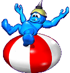

TOYZ_BEACHBALLZ
24 ... ID of a Beach Ball
There doesn't have to be a beach at all, though.
Who hasn't gone to some outdoor sporting event, like baseball, football or soccer and seen a Beach Ball being batted around the stadium seating area?
Eventually, it windz up on the playing field, causing a slight delay in the game, while a field attendant runs out to retrieve it.
The attendant is generally carrying some sort of pocket knife or hatpin, and with elaborate care to show the fans what is happening, POPz the Ball.
The Beach Ballz used in Gruntz are very well made. They last the longest of all the stationary Toyz a Grunt can have.
Gruntz bounce on them, toss them in the air, and generally have a great time playing with one.
Alas, they aren't indestructible, though, and will eventually break. "I broke my ball!."
You don't want to be anywhere near an enemy Sword Grunt when that happens to him!
Travel Speed: infinite per Tile (doesn't move). However, he does bounce on it, and may release (temporarily) the Hold Switch
 he may be standing on, or toggle the Toggle Switch
he may be standing on, or toggle the Toggle Switch  .
.'Play' duration: 26 secondz.